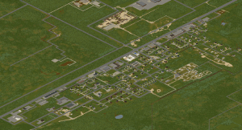

Knox Country
Knox conuntry, formerly Knox Country, is a partially fictional area where the events of Project Zomboid take place. The map is heavily based off od the real world area around Fort Knox and louisville in northern Kentucky, USA. Knox country contains recreations of the real world Muldrawgh, West Point, Dixie Mobile Parrk, March Ridge and louisville. There are also some entirely fictionaltowns within Project zomboid, including: Rosewood and Riverside
Knox Countrywas just yout standars, peaceful countryside region until an outbreak of a mysterious illness that reanimates infected persons into Zombies, late coined the Knox infection. Fearing further spread, The U.S Govermment designated Knox Country as an exclusion zone, quarantined the area and prevented any information form reaching the outside world
Muldraugh
One of the more moderately-sized towns in Knox Country, made up mostly of residential and industrial buildings. Many of the residents live in poorer quality housing than residents in other towns.
Some points of interest in town include:
Riverside
A town on the Ohio River in the north-west corner of Knox Country.
Some points of interest in town include:
Rosewood

A newly-developed town with compact services and a nearby prison.
Some points of interest in town include:
West Point

A large river-bound town north of Muldraugh with a clear town center and a close proximity to the Ohio River crossings.
Some points of interest in town include:
Louisville, KY
A large, densely populated metropolis across the Ohio River on the border of the Knox Exclusion Zone. Later designated part of the exclusion zone after being overrun. Most of the city's borders are still sealed off by fences constructed during the Knox Event.
Some points of interest in town include: